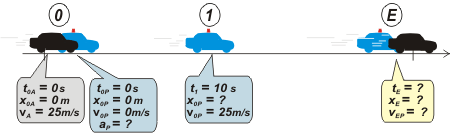
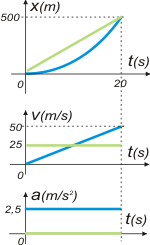

NO ME SALEN
PROBLEMAS RESUELTOS DE FÍSICA DEL CBC
(Movimiento uniformemente variado)
|
|

|
| |
Fc3.14 - Un automóvil pasa frente a un puesto caminero,
moviéndose con velocidad constante de
90 km/h, en una ruta rectilínea. En ese instante sale en persecusión un patrullero que parte del reposo y acelera uniformemente durante todo el recorrido. Sabiendo que el patrullero alcanza una velocidad de 90 km/h en 10 segudos, Hallar:
a) El tiempo que dura la persecución.
b) La posición en que el patrullero alcanza el
automóvil.
c) La velocidad del patrullero en dicho punto.
d) Graficar, para ambos móviles, la velocidad en función del tiempo y relacione dicho gráfico
con las respuestas a las preguntas a), b) y c).
|
|
OK, como siempre arrancamos con el esquema. Si no te molesta lo voy a trabajar en metros y segundos, que es más cómo. Entonces 90 km/h = 25 m/s.
| | |
|  |
|
| cuando armás un esquema al mismo tiempo estás eligiendo un Sistema de Referencia |
|
| Ahora vamos a armar las ecuaciones horarias. Tenés que tener los modelos a mano, ¿los tenés? Fijate, además, que el auto tiene un movimiento uniforme, un MRU. Mientras que el patrullero uno variado, MRUV. Entonces, las ecuaciones quedan así: |
| automóvil |
x = 25 m/s . t |
|
Estas son las ecuaciones que describen TODO el movimiento de ambos móviles. No hablan sólo de las situaciones que a vos te interesan, hablan de los infinitos instantes que transcurren durante el movimiento. |
| patrullero |
x = ½ a . t² |
|
| |
v = a . t |
|
| Ahora que tenemos las herramientas que describen todo el movimiento... las usamos: les pedimos que hablen de los puntos interesantes... aquellos donde hay datos o incógnitas, por ejemplo 1, E... |
 |
xE = 25 m/s . tE |
[1] |
(ec. de patrullero habla de E) |
| xE = ½ a tE² |
[2] |
(ec. de patrullero habla de E) |
| 25 m/s = a . 10 s |
[3] |
(ec. de patrullero habla de 1) |
Me lo temía... desembocamos sin quererlo en un sistema de tantas ecuaciones como incógnitas (3x3), esto tiene solución. Y eso quiere decir que acá terminó la física, y lo que viene es álgebra... qué porquería. Pero bueno, una vez más se ve que el método es infalible.
De la [3]
a = 25 m/s / 10 s
a = 2,5 m/s²
Eso lo meto en la [2] ylo igualo a la [1]
25 m/s . tE = 1,25 m/s² tE²
25 m/s = 1,25 m/s² tE
tE = 25 m/s / 1,25 m/s²
|
|
|
|
| |
|
|
Eso lo metemos en la [1]...
xe = 25 m/s . 20 s
|
|
|
|
|
|
Por las dudas también lo meto en la [2] para verificar que me da el mismo número.
Me falta la velocidad del patrullero en el encuentro:
vPE = a . tE
vPE = 2,5 m/s² . 20 s
|
|
|
|
|
|
Ojo... eso es 180 km/h... a esos policías hay que meterlos presos.
Tengo que hacer los gráficos, porque los pide el enunciado. Y si no los pidiese tendría que hacerlos de todas formas. Como siempre... en tándem. |
|
|
|  |
El automóvil en verde y el patrullero en azul, como corresponde. Los 6 gráficos superpuestos y en tándem, como corresponde.
El automóvil no se escapa, como corresponde. estaba lleno de narcotraficantes mafiosos.
Si hallás las áreas bajo las curvas de velocidad, ¿qué números esperás encontrar? ¿Y si hallás las áreas bajo las curvas de aceleració?
Bueno, te dejo esas preguntas para que la preocupación te agarre cuando te vayas a dormir.
|
|
|
|
| |
|
|
| Desafío: ¿Cuánto vale la velocidad del patrullero cuando alcanza a los pillos? |
|
 |
| Algunos derechos reservados.
Se permite su reproducción citando la fuente. Última actualización dic-06. Villa Pueyrredón, Ciudad de Buenos Aires, Argentina. América Latina, Planeta Tierra, Sistema Solar, Galaxia Vía Láctea, Universo. |
|
|
| | | |
|